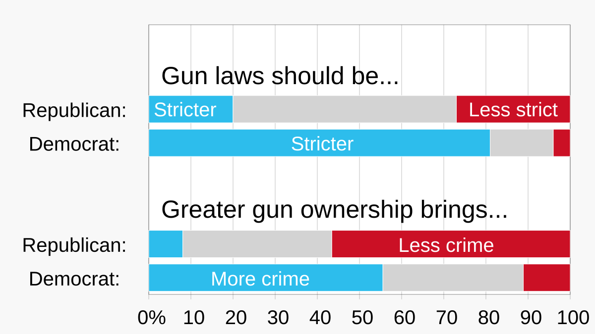
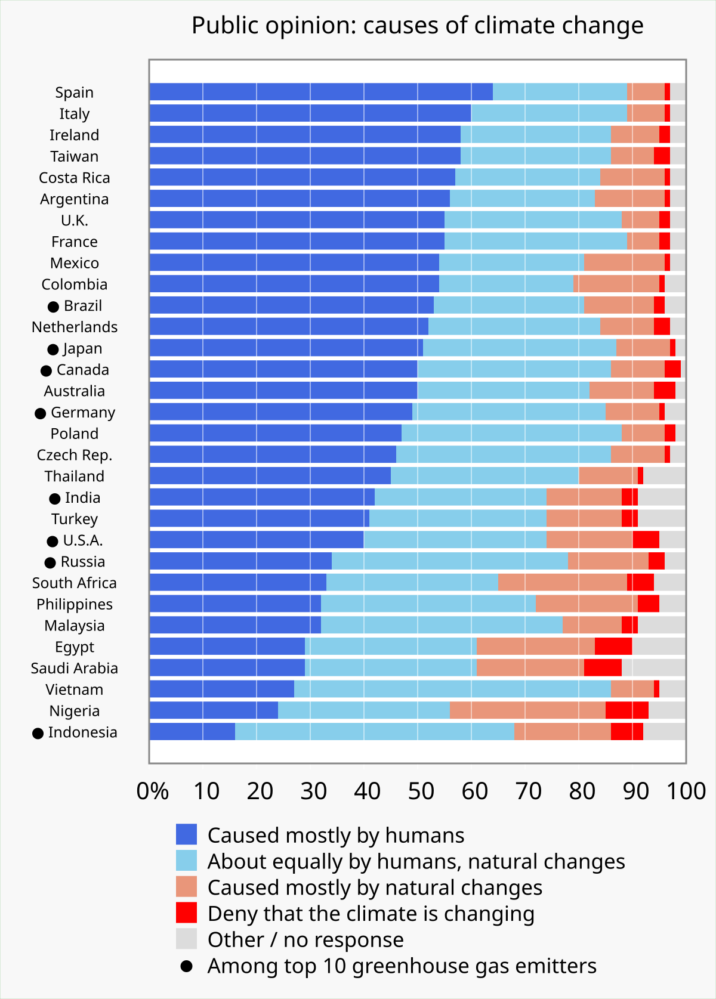
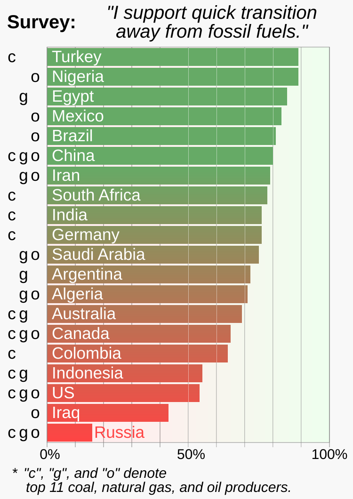
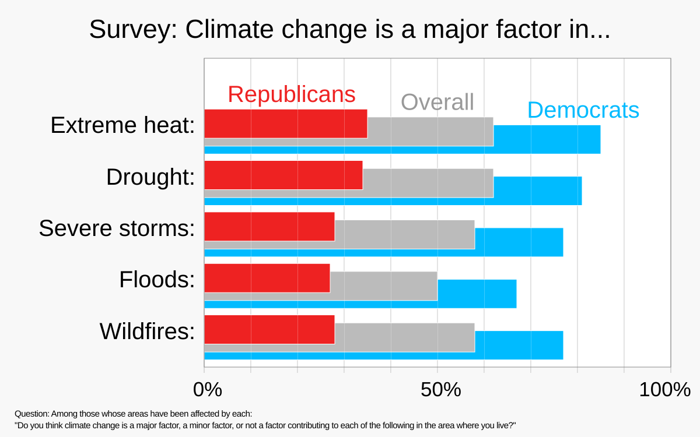
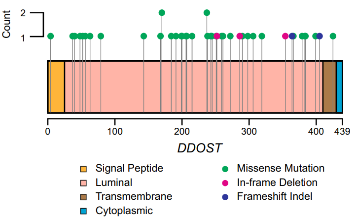

Bar / lollipop chart
About
A bar chart compares a measured value across discrete categories using rectangles whose length encodes magnitude. A lollipop chart is a lighter variant — a thin line topped with a dot — that conveys the same comparison with far less ink, which keeps long lists of categories readable. In UX work, both are the everyday workhorses for presenting survey frequencies, Likert-scale distributions, task-completion rates, and ranked feature preferences. Their strength is honesty: length maps directly to value, and a baseline of zero makes differences impossible to misread.
When to use
Use a bar or lollipop chart whenever you are comparing a single quantitative value across a set of named categories, or ranking items from most to least. The lollipop form is preferable when you have many categories and the solid bars would feel visually heavy or moiré-like.
When not to use
Avoid bars for part-to-whole relationships over continuous time, or when only two or three values are involved and a single sentence would communicate them faster. Never truncate the baseline above zero — doing so exaggerates differences and undermines the chart's main virtue.
References
Examples
Click any example to view full size and visit the original source.




